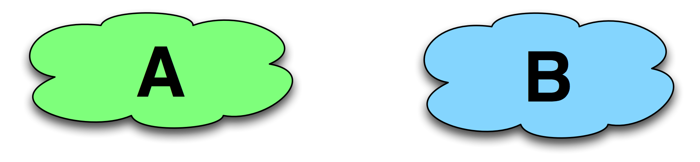
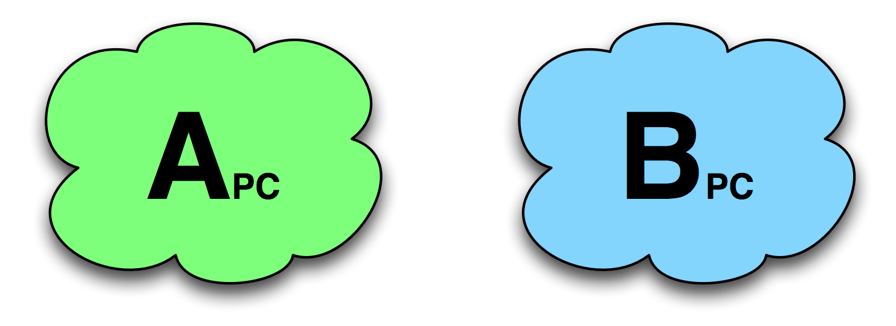
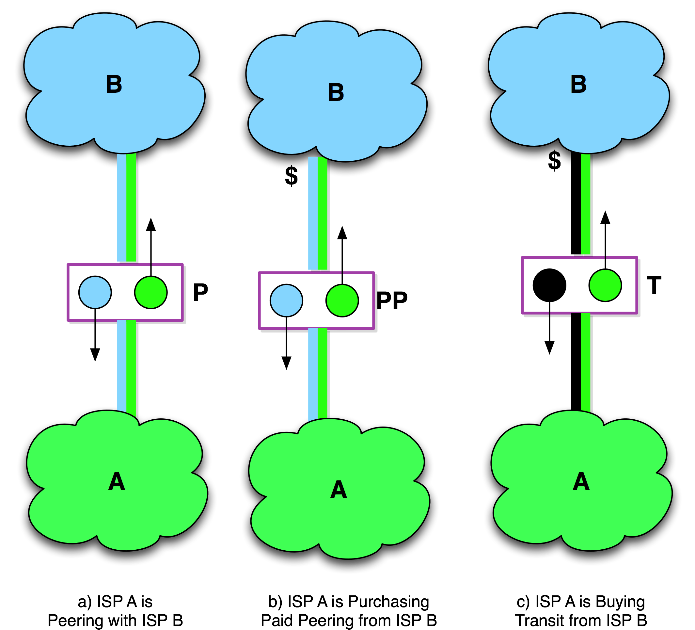
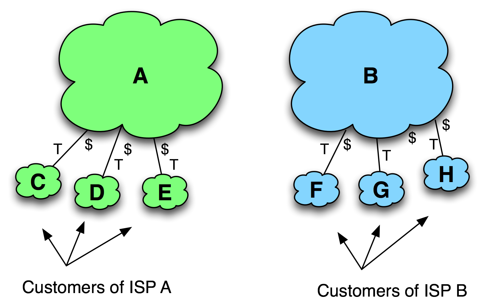
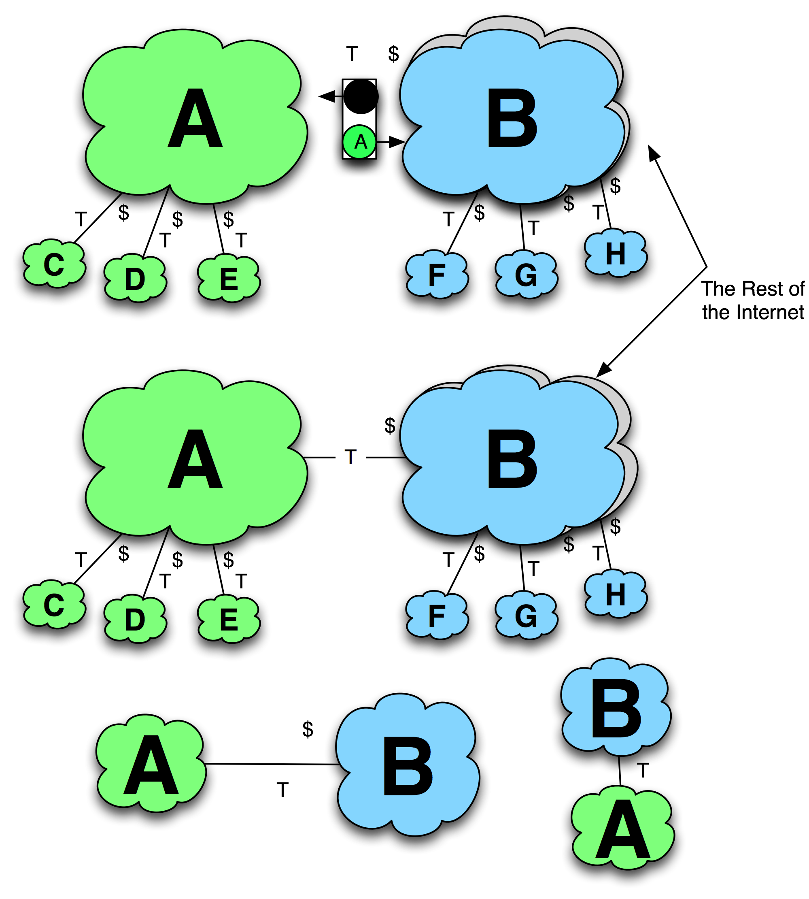
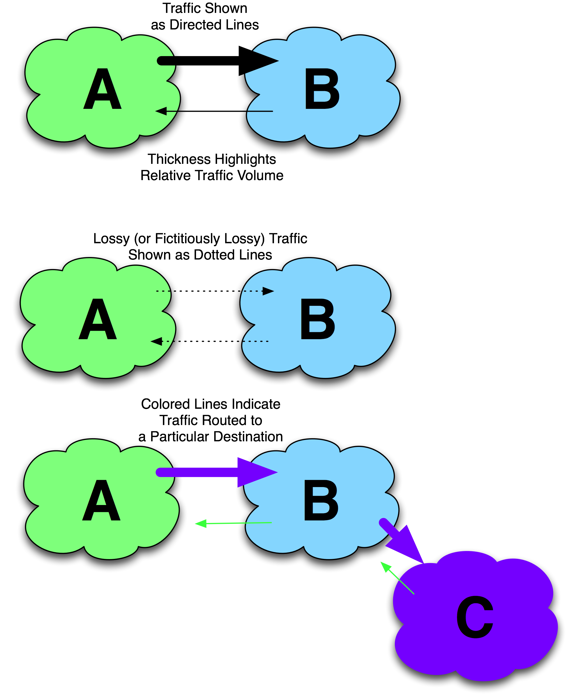

Chapter 11 – The ISP Peering Playbook
This chapter presents twenty-seven “tricks of the trade” used by some of the most seasoned peering coordinators in the world. These tactics range from the practical to the clever – and even into the unethical. While these maneuvers are not necessarily recommended, they are described in order to exercise the lexicon and illustrate the types of manipulations that occur in the Internet Peering Ecosystems around the world. You should understand and be able to recognize each of these tactics.
Introduction
Sometimes peering is requested and agreed to straight away.
But what happens when a peering coordinator sends a peering request that results in a “No” answer? Or, more commonly, what happens when a peering request doesn’t get a response? Do peering coordinators just give up and go on to the next peering target?
As it turns out, the answer is no, seasoned peering coordinators don’t give up; they have their own “tricks of the trade” for obtaining peering where they otherwise might not have been able to.
This chapter enumerates these tactics. Most of these tactics have been used to obtain peering where they otherwise would not be able to. A handful of additional ones are primarily defensive in nature, intended to defend a power position in a region.
The Graphical Representation of the Plays
To describe each tactic we will apply the graphical notation employed throughout this book to highlight the relevant characteristics of the players and their actions.
The Players
Every play in the playbook has at least two players. The initiator ISP (the one who seeks peering) we will call “ISP A,” and the target of the peering we will call “ISP B.”
Throughout this chapter we will show the initiator as a cloud labeled “A” and the target ISP will always be a cloud labeled “B” (Figure 11-1).

Figure 11-1. The initiator and the target of the peering tactic.
If the play involves specific roles within the initiator or the target organization, we will show that role in subscript. For example, in Figure 11-2 we show that we are involving the Peering coordinators for ISP A and ISP B.

Figure 11-2. The peering coordinator roles are specified with this notation.
Route Announcements
Routing announcements are the mechanism for propagating reachability information between networks, and we use the color and/or the name of the network to graphically (Figure 11-3) represent these announcements.
Note that the solid black marker in the routing announcement indicates a default route, the route that can be used to reach any destination in the Internet.

Figure 11-3. Internet Peering, Paid Peering, Internet Transit graphical notation.
The ISP Customers
The customers of the initiator and the customers of the target are shown as smaller clouds attached to the ISPs as shown in Figure 11-4.
The “T” marking on the interconnection indicates that this relationship is a customer relationship, and the “$” indicates which side is getting paid. If the “$” is absent, it is assumed that the network that is higher in the diagram is the upstream ISP receiving the compensation for the transit relationship.

Figure 11-4. ISP Customers.
Interconnection Relationships
ISPs can have transit relationships with other ISPs. Figure 11-5 shows a few equivalent graphical notations for transit relationships.
A “P” is used to denote an established peering relationship. The diagrams in Figure 11-6 show three notations for a peering relationship. The first two are equivalent notations of free peering relationships and the last is a Paid Peering notation.

Figure 11-5. Equivalent Internet Transit notations.

Figure 11-6. Graphical notation of peering relationships.
Traffic Flow Notations
To demonstrate traffic traversing an interconnection, we use a directed line as shown in Figure 11-7. The directed line is colored to represent traffic destined to a particular ISP. For example, traffic destined to a purple ISP C is shown as a directed purple arrow. If packet loss is relevant to a particular tactic, it is denoted as a dashed line. If the traffic destination is not relevant, the color black is used. The thickness of the line represents the amount of traffic.

Figure 11-7. Traffic flow notations.
The Internet Service Provider Peering Playbook
To make it into the ISP Peering Playbook chapter, the tactic had to have been effective in:
- obtaining peering where the ISP would have otherwise not been able to obtain peering, or
- defending one’s peering position
This litmus test has been applied to each of these tactics.
We neither endorse nor condone any of these tactics; we are simply documenting them for the benefit of the community. If you are involved in peering on the Internet, then you should be aware of these maneuvers.
- The Extended Direct Approach
- Internet Transit with Peering Migration
- The End-Run Maneuver
- Bundle Internet Transit with Peering
- Buy Transit from the most Restrictive Tier 1 ISP
- Transitional Paid Peering
- Partial-Route Internet Transit
- Play Chicken
- Traffic Manipulation
- Bluff Issues
- Be Open. Loudly.
- Be Everywhere
- Get Traffic
- Friendship-based Peering
- Spam Peering Requests
- The Honey Approach - Be Sweet
- Purchase a well-peered ISP
- Bait-n-Switch
- False Peering Outage
- Leverage Broader Business Arrangement
- Overseas Power Play
- Construct Peering from Transit
- Defensive Tactic - Do Not Peer in Your Home Market
- Defensive Tactic - Protect Peering Policy
- Change and Escalate Peering Prerequisites
- MILD Defensive Tactic
- Congest Transit Pipes
Notes from the field.
ISPs Calling Playbook Tactics By Number
I was introduced to the VP of Internet Operations for a large European ISP who shared that the ISP’s engineering teams were so well versed with these tactics that they referred to them by number. As in, “Good morning, Geoff. We had another 19 (False NOC Outage) last night!”